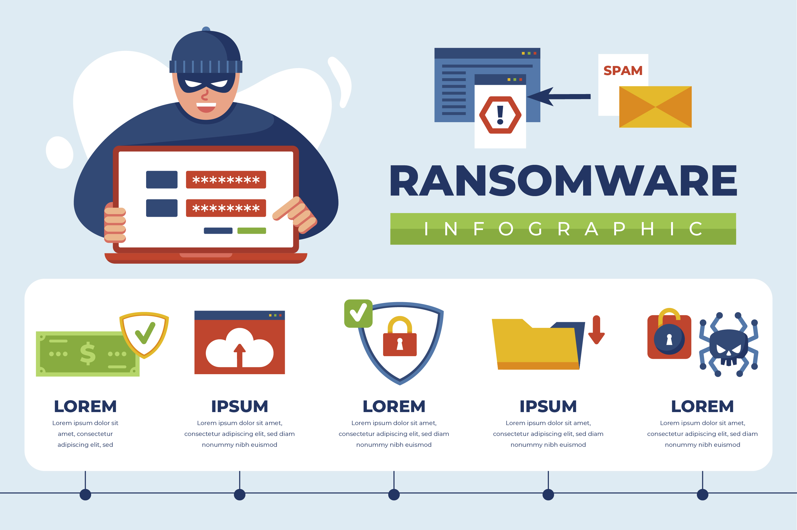

Sejarah Keamanan Jaringan
Keamanan jaringan telah berkembang seiring dengan kemajuan teknologi informasi dan komunikasi. Pada awalnya, ketika jaringan komputer pertama kali dibangun pada 1960-an, keamanan tidak menjadi perhatian utama karena pengguna jaringan masih terbatas pada kalangan tertentu, seperti militer dan lembaga akademis. Namun, seiring dengan berkembangnya jaringan komputer dan munculnya internet pada 1980-an, kebutuhan akan keamanan jaringan mulai meningkat. Ancaman seperti virus komputer, worm, dan serangan peretas mulai muncul, yang memicu pengembangan teknik-teknik baru untuk melindungi data dan sistem komputer dari akses yang tidak sah. Pada 1990-an, dengan meluasnya penggunaan internet di kalangan masyarakat umum, isu-isu keamanan jaringan menjadi semakin kritis, yang mendorong perkembangan teknologi keamanan seperti firewall, enkripsi, dan sistem deteksi intrusi (IDS).
Definisi Keamanan Jaringan
Keamanan jaringan adalah serangkaian praktik dan teknologi yang dirancang untuk melindungi integritas, kerahasiaan, dan ketersediaan data dan sumber daya jaringan dari berbagai ancaman, seperti serangan siber, pencurian data, dan akses tidak sah.

Keamanan jaringan mencakup berbagai aspek, mulai dari pengaturan firewall untuk mengontrol akses ke jaringan, hingga penerapan enkripsi untuk melindungi data yang ditransmisikan. Tujuan utama dari keamanan jaringan adalah untuk memastikan bahwa data yang dikirimkan melalui jaringan tetap aman dari gangguan dan tidak dapat diakses oleh pihak yang tidak berwenang.
Kasus-Kasus Keamanan Jaringan
Berbagai kasus pelanggaran keamanan jaringan telah terjadi, yang menunjukkan betapa pentingnya menjaga keamanan data. Salah satu kasus yang terkenal adalah serangan WannaCry ransomware pada tahun 2017, yang menyebar secara global dan menginfeksi lebih dari 230.000 komputer di 150 negara.
Serangan ini menyebabkan kerugian besar bagi organisasi dan individu yang terdampak, karena data mereka dienkripsi dan tidak dapat diakses tanpa membayar tebusan. Contoh lain adalah kasus peretasan Yahoo pada 2013 dan 2014, di mana lebih dari tiga miliar akun pengguna terkena dampak pencurian data. Kasus-kasus ini menyoroti pentingnya implementasi keamanan jaringan yang kuat untuk melindungi data dari ancaman.
Tips dan Trik Keamanan Jaringan
Untuk menjaga keamanan jaringan, ada beberapa tips dan trik yang dapat diterapkan. Pertama, selalu gunakan kata sandi yang kuat dan unik untuk setiap akun, serta ubah secara berkala. Kedua, pastikan untuk memperbarui perangkat lunak dan sistem operasi secara teratur, karena pembaruan ini sering kali mencakup perbaikan keamanan penting. Ketiga, gunakan firewall dan antivirus yang andal untuk melindungi jaringan dari serangan yang mungkin terjadi. Keempat, hindari mengklik tautan atau lampiran email yang mencurigakan, karena ini sering kali menjadi pintu masuk bagi malware. Terakhir, edukasi pengguna jaringan mengenai praktik keamanan yang baik, karena faktor manusia sering kali menjadi titik lemah dalam keamanan jaringan.
Saran untuk Menyelesaikan Kasus-Kasus Keamanan Jaringan
Untuk menyelesaikan kasus-kasus keamanan jaringan seperti serangan ransomware atau peretasan data, langkah pertama yang harus dilakukan adalah segera menghentikan penyebaran serangan dengan memutus akses ke jaringan yang terinfeksi. Selanjutnya, lakukan pemulihan data dari cadangan yang aman, jika tersedia. Untuk mencegah serangan serupa di masa depan, perkuat sistem keamanan dengan menerapkan patch terbaru, meningkatkan protokol keamanan, dan melakukan audit keamanan secara berkala. Selain itu, pelatihan bagi pengguna jaringan untuk mengenali tanda-tanda serangan siber juga sangat penting untuk mengurangi risiko terjadinya serangan di masa depan.
Jenis-Jenis Serangan dalam Keamanan Jaringan
Ada berbagai jenis serangan yang dapat mengancam keamanan jaringan. Salah satu yang paling umum adalah serangan DDoS (Distributed Denial of Service), di mana penyerang membanjiri jaringan dengan lalu lintas yang berlebihan sehingga menyebabkan sistem menjadi lambat atau tidak berfungsi. Phishing adalah jenis serangan lain di mana penyerang mencoba mendapatkan informasi sensitif seperti kata sandi atau nomor kartu kredit dengan menyamar sebagai entitas tepercaya.
Man-in-the-Middle (MitM) adalah serangan di mana penyerang menyusup ke dalam komunikasi antara dua pihak untuk mencuri atau memanipulasi data. Terakhir, serangan malware seperti virus, trojan, dan worm dapat menyebabkan kerusakan besar pada jaringan dengan menginfeksi dan menyebar melalui perangkat yang terhubung ke jaringan.